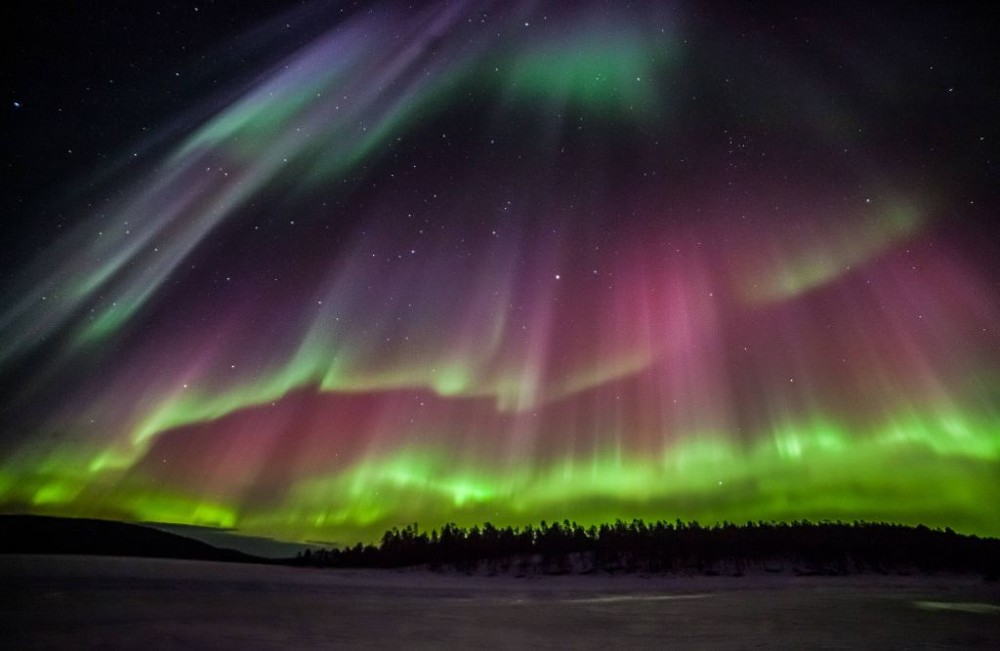
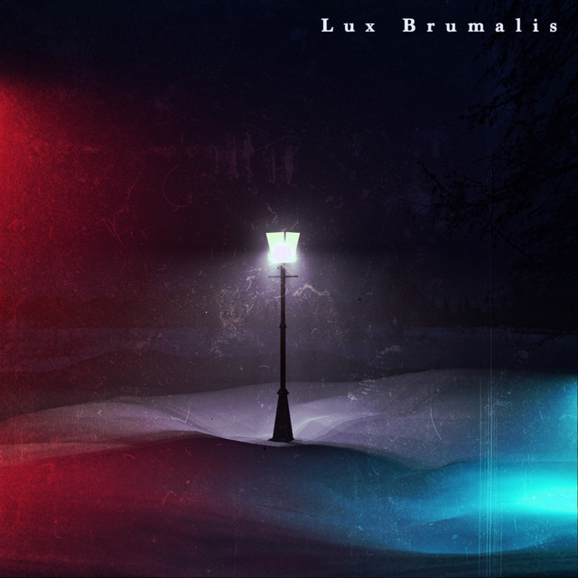

Aurora Borealis

Kutup ışıkları ya da kutup aurorası, kutup bölgelerinde gökyüzünde görülen, yeryüzünün manyetik alanı ile Güneş'ten gelen yüklü parçacıkların etkileşimi sonucu ortaya çıkan doğal ışımalardır. Kuzey enlemlerde bu etki aurora borealis veya kuzey ışıkları olarak adlandırılır. Güney enlemlerindeki aurora australis (güney kutup ışıkları) oluşumu da benzer özelliklere sahiptir; ancak Antarktika’da, Güney Amerika’da ve Avustralya’da daha yüksek enlemlerden görülebilir.
Lux Brumalis

Doğrudan tercüme edilen "lux brumalis", "kışın ışığı" anlamına gelir. Karşılık gelen İngilizce kelime yok. Ancak ışığın mevsimlerle nasıl değiştiğini fark eden herkes bu terimin güzelliğini ve faydasını anlayabilir.
Solis Occasum
Deneyim için Latince kelimeyi kullanabiliyorsanız, güzel bir gün batımını izlemek daha da güzel. "Solis occasum", "güneşin battığı yer" anlamına gelir.